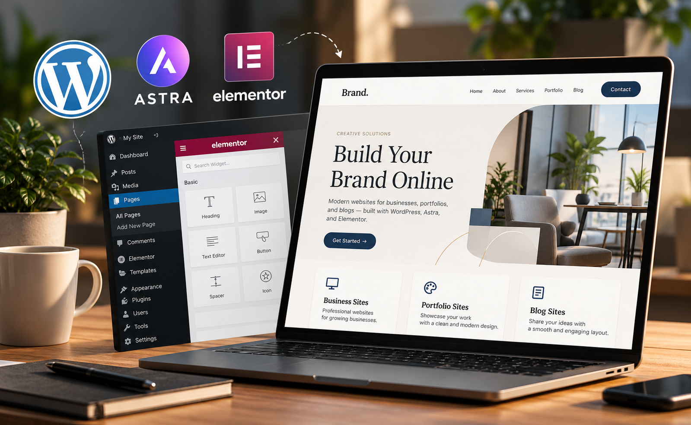
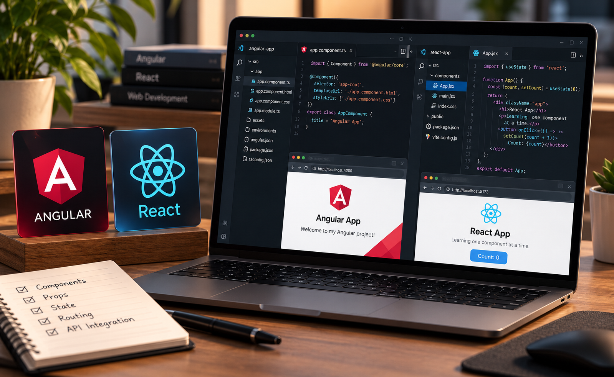
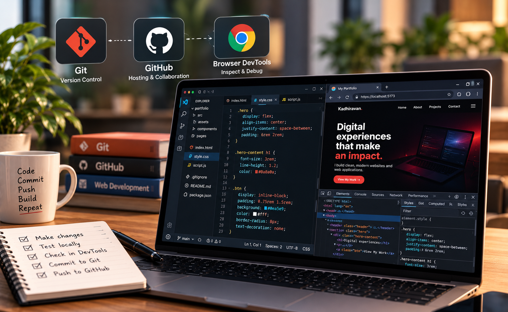
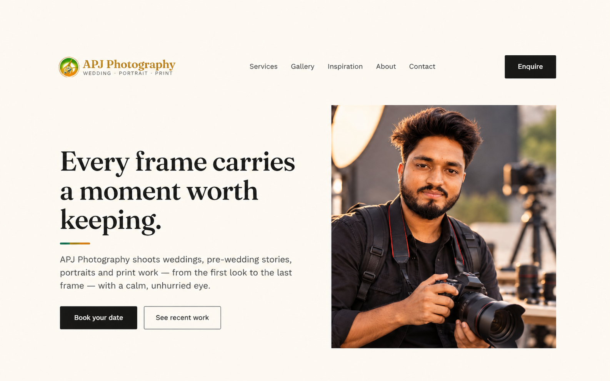
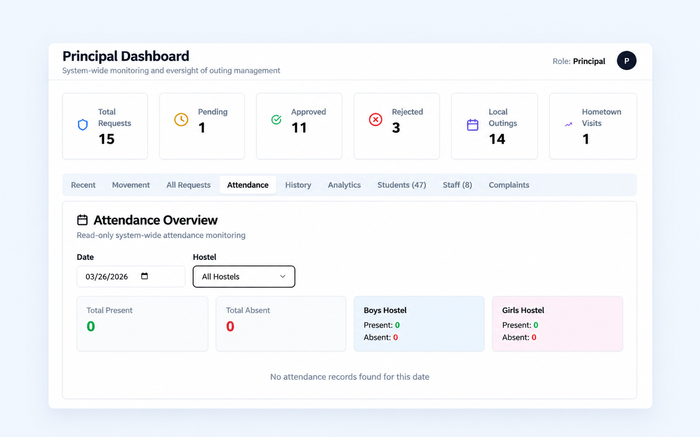
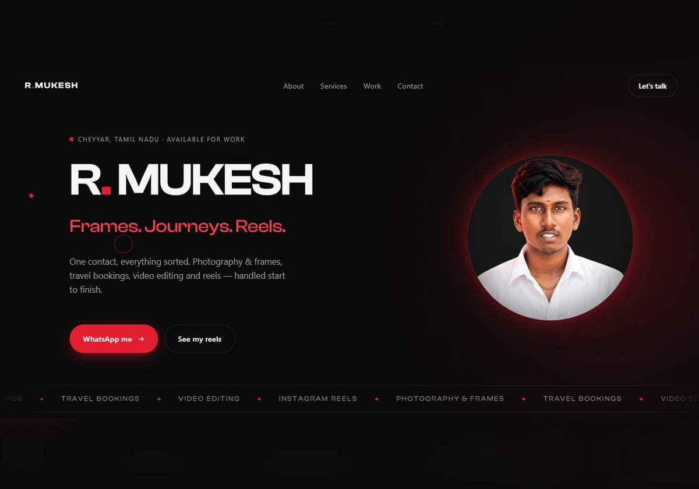
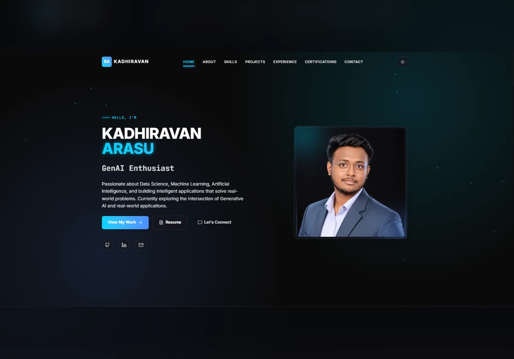
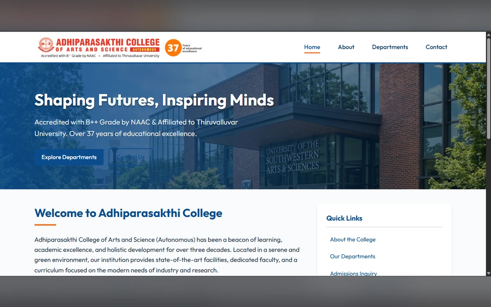
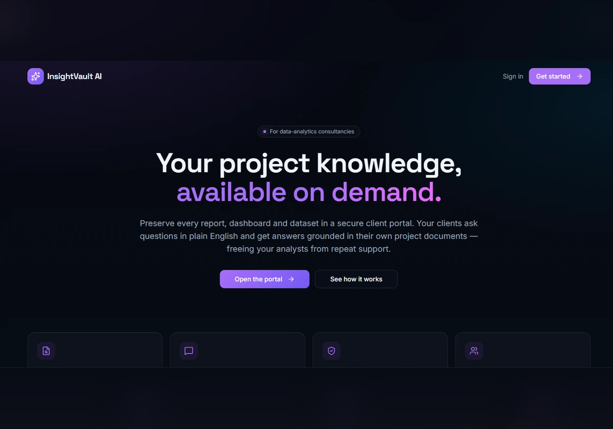

Start with the brief
Read the request carefully. Most design problems are actually communication problems in disguise.
WEB DEVELOPER · CREATIVE BUILDER
I craft digital products and work with modern frontend tools, with a foundation in data analytics.
01 ABOUT ME
Read the request carefully. Most design problems are actually communication problems in disguise.
Clear type, obvious hierarchy, and pages that work on a phone as well as they do on a laptop. Nothing on the page should make the reader pause to figure it out.
Reading about CSS only gets you so far. Concepts stick when I have to make them work in a real layout, on a real brief.
I work mostly with WordPress, HTML, CSS, and JavaScript. Most of what I know came from building things, breaking them, and rebuilding. I care about the small details, spacing, type, and code. Right now I'm adding Flutter and Firebase to that, so a project can run from the page to the data behind it.
Custom WordPress themes, hand-written HTML/CSS, and small JavaScript interactions — built to the brief, not to a template.
Python, SQL, and Power BI. The certificates are listed in my Experience section. The rest, I'm picking up project by project.
02 MY TOOLKIT
Most of these I picked up because a project needed them. A few I'm still learning properly, and I say so below.

WordPress, HTML, CSS and JavaScript, built by hand.

Learning Angular and React, one small build at a time.
Cleaning messy data into charts people can read.

Git, GitHub and DevTools to ship work that holds up.
03 SELECTED WORK
A selection of websites and digital projects I've worked on while building my skills and exploring new technologies.

A photography website designed to present visual work through a focused, image-led experience.

A hostel management project focused on organizing hostel information and simplifying everyday workflows.

A portfolio website created to present a client's work, profile, and professional services.

My own portfolio, built to showcase projects, technical skills, and my progress as a web developer.

A college-focused website project designed to organize information and present it in a clear layout.

A digital library management platform designed to organize, store, and track books and documents in one place.
04 WHAT I CAN DO
Small to mid-sized projects, usually starting from a conversation rather than a finished spec. Here's what I take on.
Business pages, portfolios, and blogs built with WordPress, Astra, and Elementor. Theme setup, content structure, and a layout that fits the brand — not a stock template.
From brief to live siteSingle pages or small projects written directly in HTML, CSS, and JavaScript. A good fit when a project doesn't need a CMS and the markup should stay small and readable.
From markup to working pageCleaning a messy spreadsheet and turning it into a chart or Power BI dashboard someone can actually read. Included: a short walkthrough of what the numbers are saying.
From raw data to readable chartBroken layouts, outdated content, slow pages, small bugs. If something on your site stopped working the way it used to, I can take a look and give you an honest quote.
From broken to functioningHave a project on your desk?
Send me a message ↗05 MY JOURNEY
Mobile, data science, and machine learning — one internship each.
Black I Technologies and Solutions
Building a cross-platform Flutter app with Firebase auth and Firestore.
BDremz Global Solutions
Cleaned raw datasets with Pandas and Scikit-learn, then turned the findings into charts the team could act on.
CodSoft
Trained a churn classifier on 10,000+ records with Scikit-learn that reached roughly 85% accuracy.
Right now: Flutter state management and Supabase.
St. Peter's College of Engineering and Technology
2022 – 2026
Besant Technologies
Accenture Forage
BCG X Forage
Tata Forage
British Airways Forage
Udemy · Proper Dot Institute
06 GET IN TOUCH
Whether it's a site that needs fixing, a small project that needs starting, or a role you think I'd fit — email is the fastest way to reach me. I read everything that comes in, and I reply either way, even if it's just to say I'm not the right person for the job.